Deep Residual Learning for Image Recognition
Authors: Kaiming He, Xiangyu Zhang, Shaoqing Ren, Jian Sun
For class EE/CSC 7700 ML for CPS
Instructor: Dr. Xugui Zhou
Presentation by Group 1: Joshua McCain (Presenter), Lauren Bristol, Joshua Rovira
Summarized by Group 6: Yunpeng Han, Yuhong Wang, Pranav Pothapragada
Time: Monday, September 9, 2024
Summary
As the number of layers of neural networks increases, the problems of overfitting, gradient vanishing, and gradient explosion often occur, so this article came into being. In this paper, the concept of deep residual networks (ResNets) is proposed. By introducing "shortcut connections," this study solves the problem of gradient vanishing in deep network training and has an important impact on the field of deep learning. The method of the paper explicitly redefines the network layers as learning residual functions relative to the inputs. By learning residuals, the network can be optimized more easily and can train deeper models more efficiently. Therefore, this method can help solve the performance degradation problem that may occur when the network layer increases. In addition, the article displays the experimental part. The model shows significant improvements in handling large-scale visual recognition tasks like ImageNet and CIFAR-10. The application of deep residual networks in major visual recognition competitions like ILSVRC and COCO 2015 further proves their power and wide applicability.
Slide Outlines
History
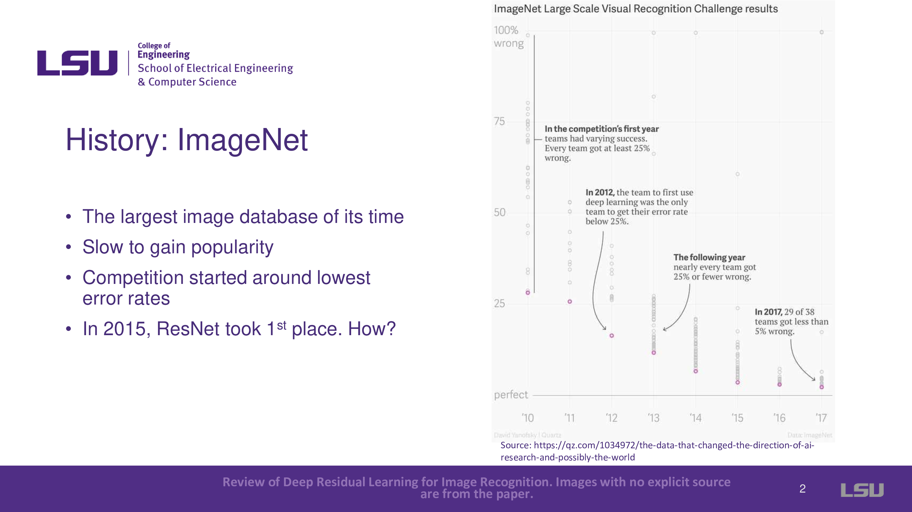
ResNets (Residual Networks) is introduced, and it is mentioned that ResNets won the 2015 ImageNet Large Scale Visual Recognition Challenge. People's curiosity about how they accomplished this led to the publication of the paper in December 2015.
Introduction
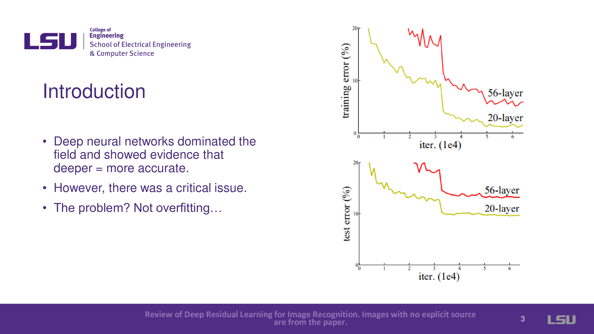
In ML, deeper networks are known to yield more accuracy in machine learning. But a crucial problem surfaced: performance wasn't always enhanced by deeper networks. Contrary to the expectation of overfitting, the 56-layer network performs significantly worse than the 20-layer network, as demonstrated in the slides.
Problem
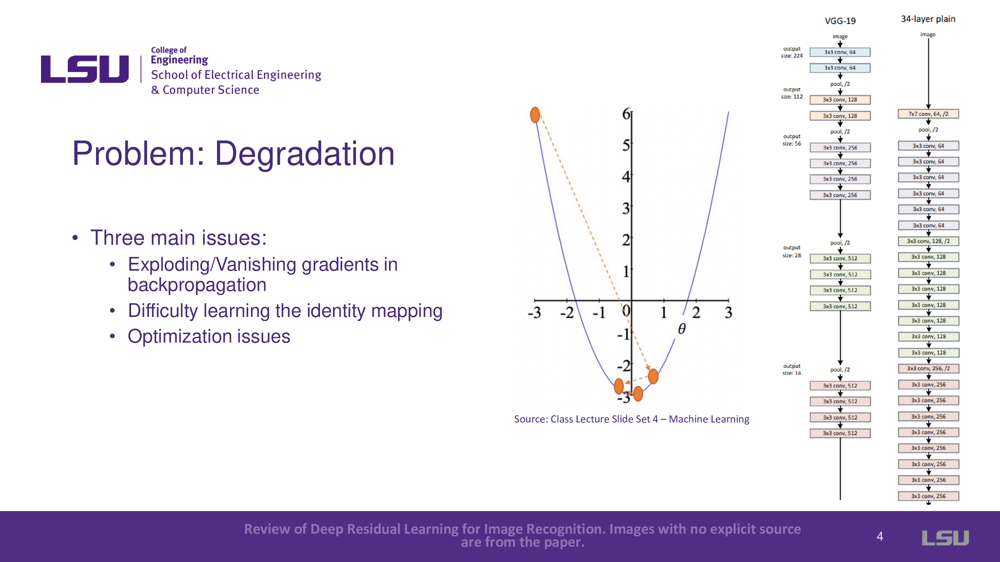
The problem of degradation in deeper networks was addressed. Three main issues with degradation were introduced: exploding/vanishing gradients in backpropagation, difficulty learning the identity mapping, and optimization issues. For vanishing gradients, deeper layers had no reference to the original input. Therefore, it is difficult to adjust weights, especially in deeper networks, and will lead to exploding or vanishing gradients that caused networks to either not converge or get stuck in local minima. For the second problem, difficulty learning identity mapping, the expectation was that a deeper network could map identity (the output should match the input), but this wasn’t the case, and deeper networks failed to maintain accuracy. The third problem is optimization complexity. Each layer in traditional networks had to create a completely new function for every input, increasing the complexity and number of parameters unnecessarily.
Solution
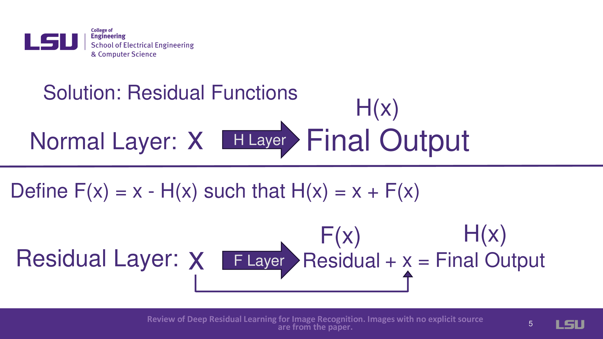
Introduces the concept of residual functions, where instead of trying to map new complex functions in each layer, the residual connection focuses on learning the difference (residual) between input and output and adds that to the input. Formulation: X + F(x) = H(x) where X is input, F means residual layer, F(x) means what after Residual, H(x) means output.
Residual Example
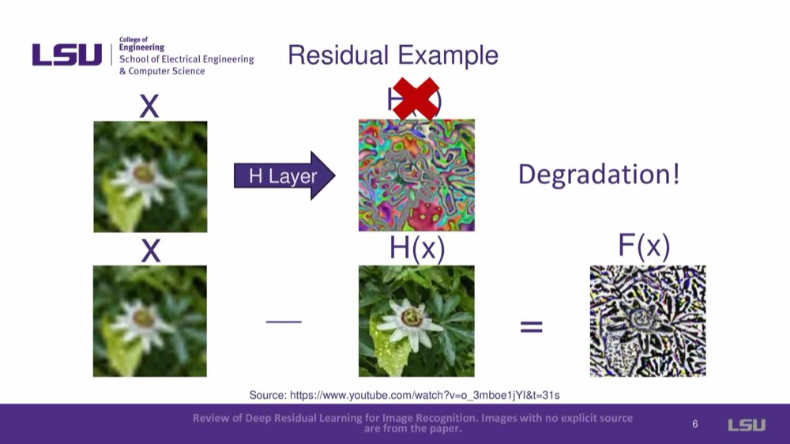
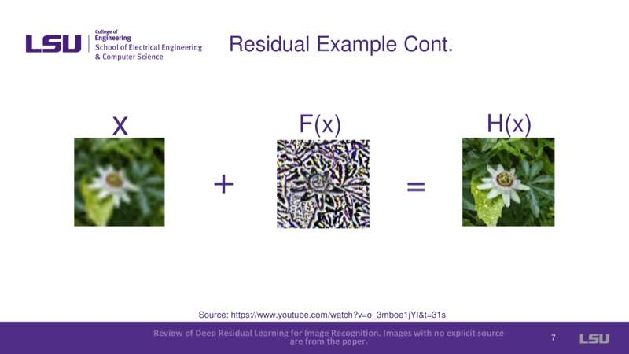
Provides a visual representation of residual functions: X + F(x) = H(x), where x is a blurred image, F(x) is a residual layer, and H(x) is the output image, which is very clear.
Residual Blocks
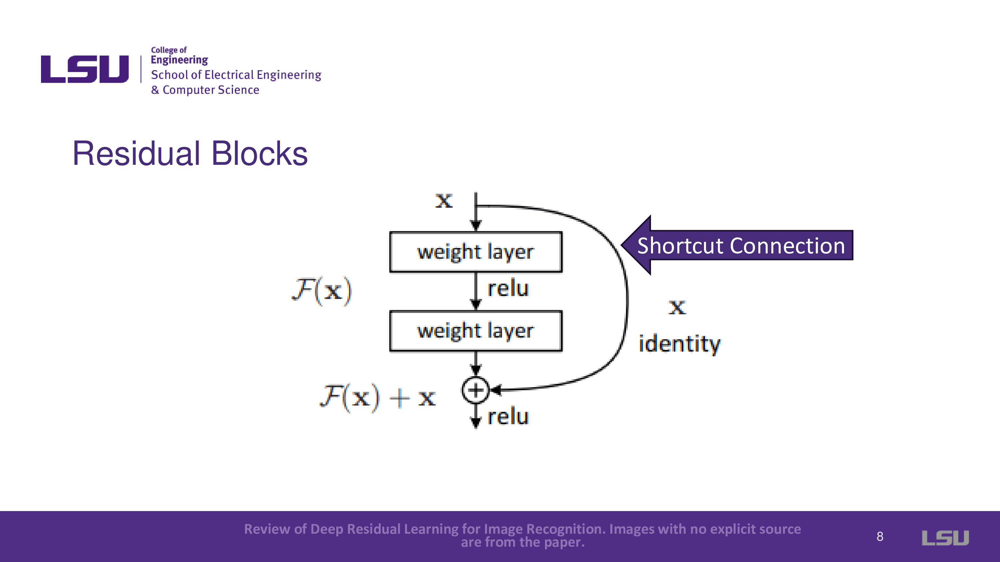
This part shows how the input is carried through a shortcut and added to the residual function to produce the output, solving the degradation problem.
Residual Solution
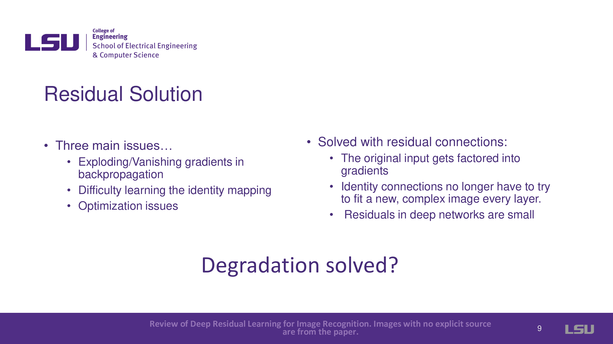
It shows ResNets has some advantages:
- The original input gets factored into gradients
- Identity connections no longer have to try to fit a new complex image every layer.
- Residuals in deep networks are small
Corresponding to the problem: Exploding/Vanishing gradients in backpropagation, difficulty learning the identity mapping, and optimization issues.
Residual Network (ResNets)
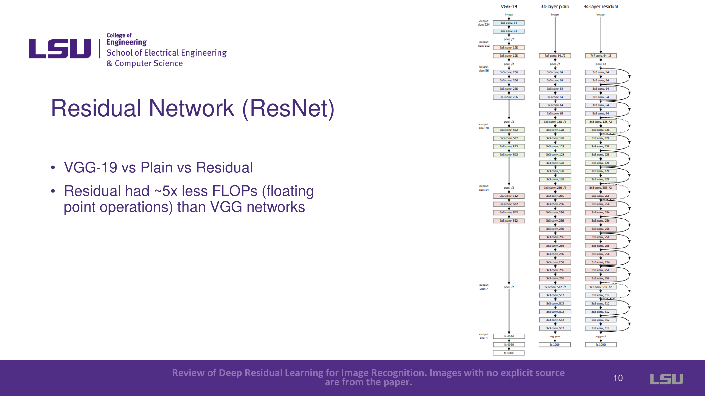
VGG-19, 34-layer Plain, and 34-layer Residual were compared. Residual shows it had ~5x less FLOPs (floating point operations) than VGG networks.
Shortcut Connection Dimensions
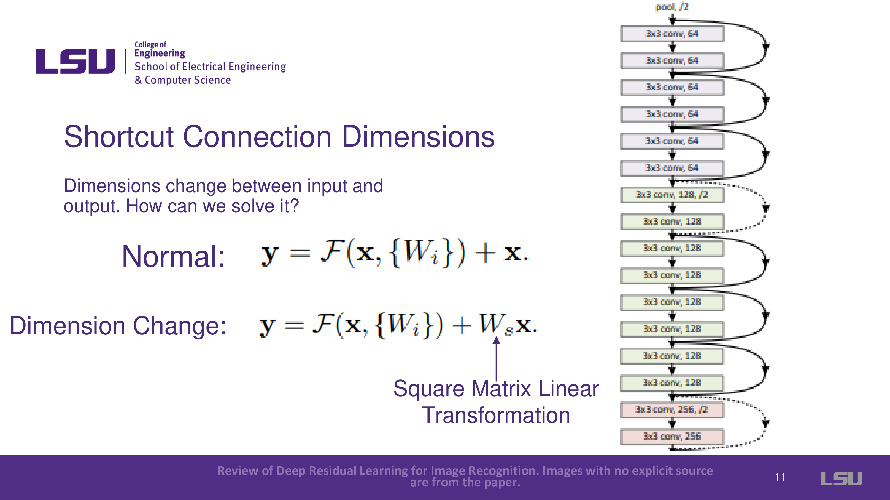
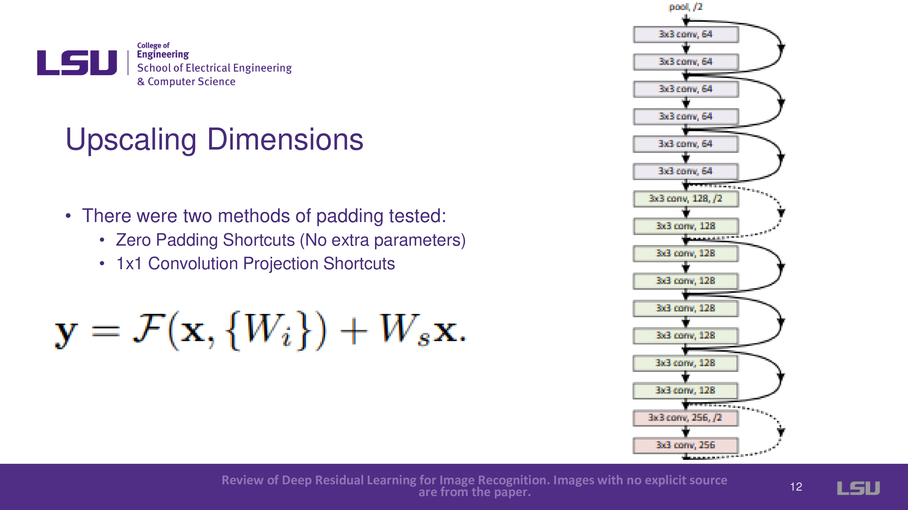
Dimensions change between input and output. How can we solve it? By adding a Square Matrix Linear Transformation, the dimension will change. For upscaling dimensions, there were two methods of padding tested. The first method is the zero having shortcuts (No extra parameters). The other is 1x1 Convolution Projection Shortcuts.
Experiments (ResNet Testing)
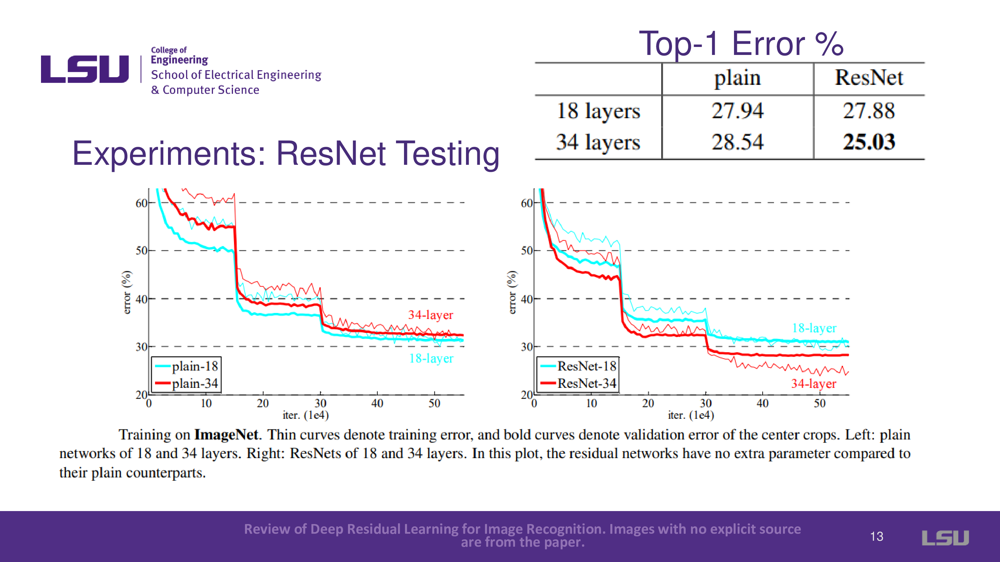
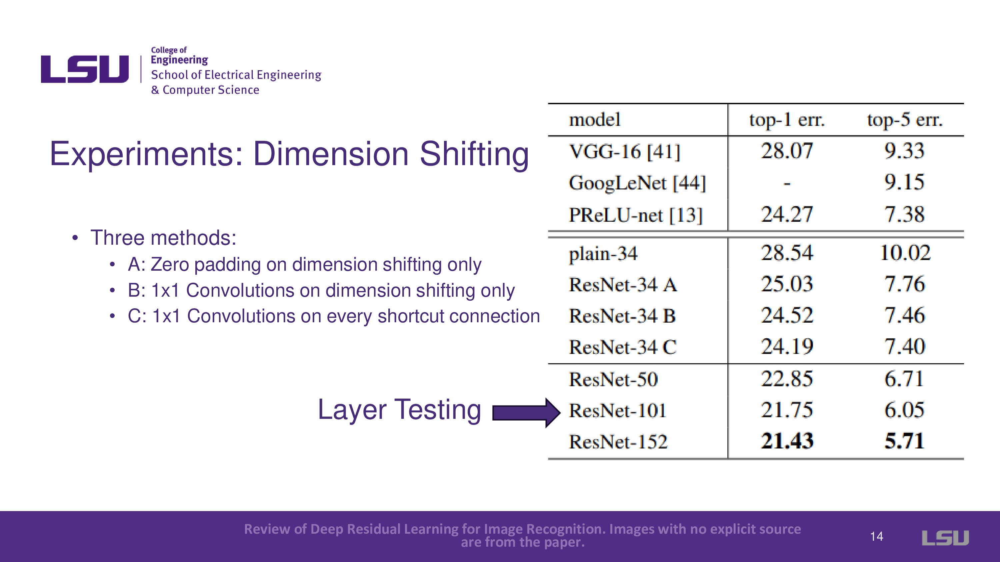
There are three methods that can do dimension shifting: Zero padding on dimension shifting only, 1x1 Convolutions on dimension shifting only, and 1x1 Convolutions on every shortcut connection. The ResNets team tested the network on different datasets to verify its effectiveness. ResNets improved top 1 and top 5 error rates, showing it could generalize well to new datasets.
Bottleneck Block Design
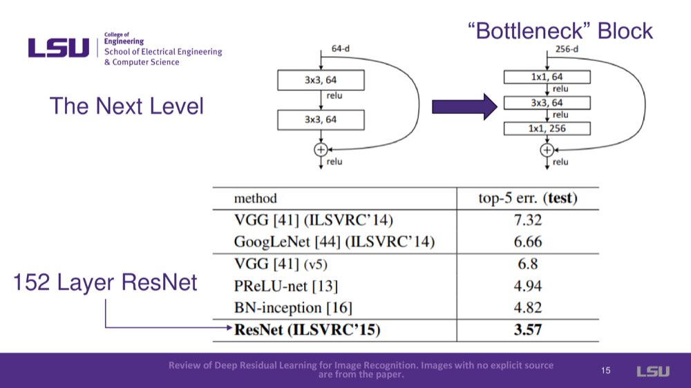
The bottleneck block was introduced, which helped ResNets reach 152 layers while maintaining performance and reducing training time by resizing images inside blocks.
Limitations
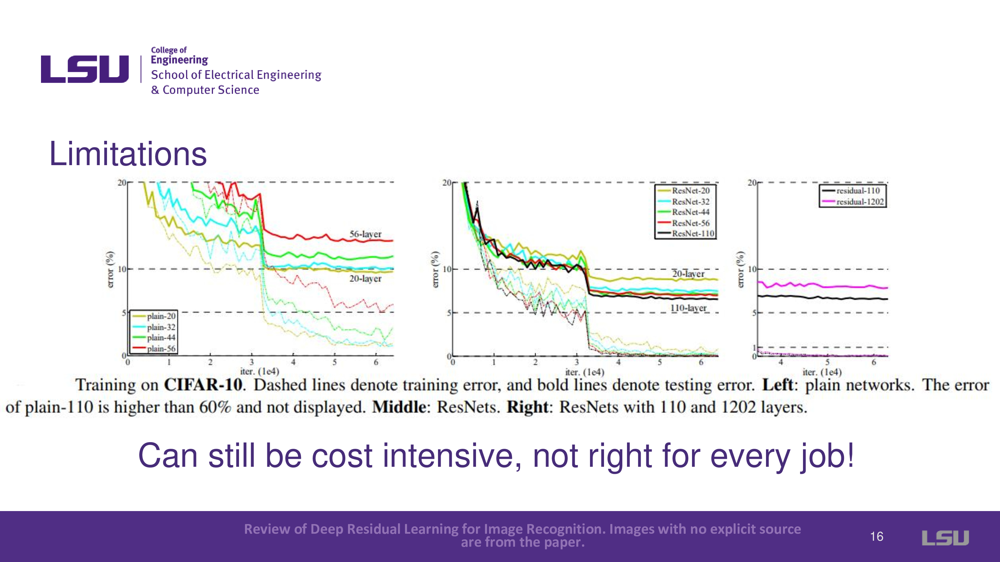
While ResNets solved many drawbacks, deeper networks beyond 1000 layers showed overfitting, indicating limitations in scaling depth indefinitely. ResNets was also computationally intensive and not ideal for every task.
Main Takeaways

Residual networks can solve the degradation problem through these shortcut connections, which allow networks to go deeper while improving accuracy and reducing the number of parameters required. ResNets did so with fewer parameters than everyone else.
Aftermath
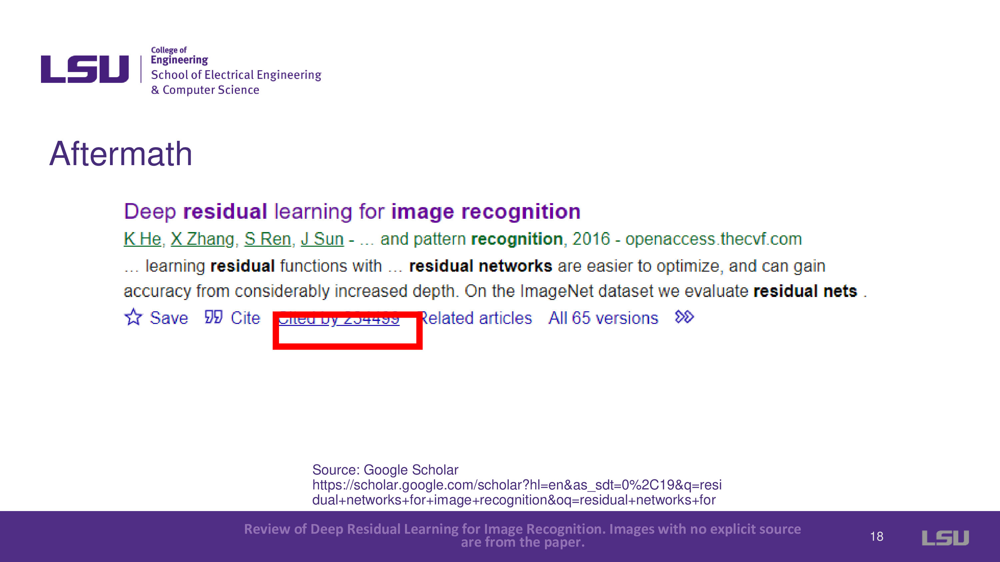
This paper was very influential and cited over 230k times in Google Scholar, which is a foundational paper in machine learning.
Cyber-Physical System Example
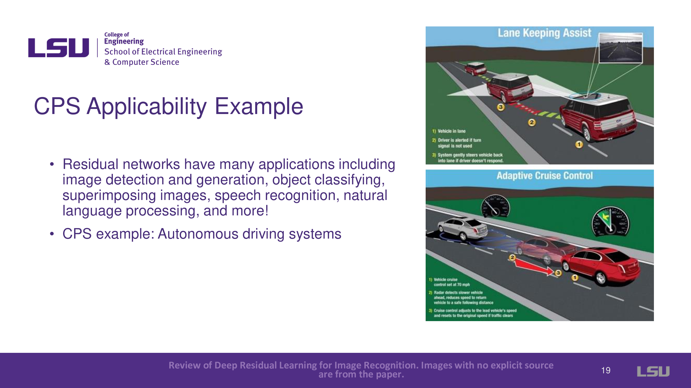
ResNets has broad applications, including autonomous driving systems where accuracy is crucial for tasks like object detection and classification. For example, image detection of stop signs or a car is crucial.
Teamwork Acknowledgement
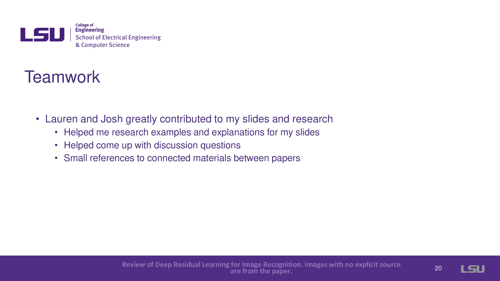
The presenter acknowledges the contributions of teammates who helped with research, examples, and questions.
Q&A
Q1: Why are we using 1*1 convolutions in the network?
The idea behind ResNets is to add the input to the output of a set of layers while the layers train to only compute the difference. However, given that the dimensionality of the input is not necessarily the same as the output, we use 1x1 convolutions to extend dimensionality. Other methods of extending, such as zero padding, have also been tested. Still, only performing convolutions on layers that need it seems to strike the right balance between computational complexity and model accuracy.
Q2: Is the gradient flowing through the shortcut in the network? Is that why we solve the problem of exploding gradients?
While it is intuitive to think of it as gradients flowing through the shortcuts presented in the network, it is more accurate to say that the input itself is factored into the gradient. Since the residuals are generally small, we can better avoid vanishing or exploding gradients during backpropagation.
Q3: It has been presented that ResNets are computationally expensive; how does that affect their use in real-time systems?
ResNets indeed introduce additional computational complexity and overhead, which is potentially an issue for certain systems. For smaller datasets and less complex applications where very high accuracy is not needed, using ResNets might be overkill and not worth the tradeoff. But when it comes to systems that require accuracy, such as autonomous driving, this might not be that big of an issue, given that while ResNets take slightly more time, they are still fast enough to make real-time decisions without dangerous delays (given a powerful enough computer). In short, it's about balancing speed and accuracy based on importance.
Q4: Where in the networks are we subtracting to get the namesake—Residuals?
In the ResNet, the network doesn’t subtract the final (required) output from X as is mentioned in the slides; it was an illustration to show how the residuals came into the picture. Instead of generating the necessary input H(x) and subtracting from x to get the residual F(x), the system directly learns to generate the residual F(x), which is generally smaller and hence eliminates the issues presented by generating H(x) directly.
Discussion
Q1: What technologies, especially in cyber-physical systems, could benefit from residual learning?
- Utilizing video footage for control: Group 1’s other team members present the potential use of ResNets to generate realtime control, given visual input. The team member also offered a specific example of detecting hand positions from a video feed and using it to control robotic ones.
- Steak grading/ Image classification: Group 9 presented the idea of utilizing ResNets for steak grading; given the proven potential of ResNets in classification, this potential application is efficient.
- Utilization in low-light enhancement: Group 3 presented a potential idea of utilizing resents for low-light image enhancement, specifically for improving classification performance in low-light images.
- For quality assurance of chemical products: Group 4 and Group 5 presented an application to potentially understand the chemical compositions of products, specifically for quality assurance. This idea is presented as a classification problem, which plays to the strengths of the model
- For reverse engineering binaries to code: Group 7 presented the application of these networks in reverse engineering binaries, which presents an exciting and potentially helpful application in detecting potential malware in binary file formats such as .exe
- For embryo detection: Group 2 presented their previous work using ResNets on detecting embryos. They also presented that utilizing ResNets gave a 97% accuracy, which further proves the usefulness of ResNets.
- Identification of closed architecture models: Group 3 presented the idea of reversing and identifying the models, given a closed architecture neural network.
Q2: How many layers do you think optimal residual networks will use in 2024, especially for image recognition? Is it different for other applications?
- For Image Recognition: Some groups predicted that for complex image recognition tasks, the optimal number of layers remains around 152, as was suggested in the original ResNet architecture. However, others speculated that fewer layers—perhaps 50 to 100—would be sufficient to balance accuracy and computational efficiency for less complex tasks.
- For Image Recognition: Some groups predicted that for complex image recognition tasks, the optimal number of layers remains around 152, as was suggested in the original ResNet architecture. However, others speculated that fewer layers—perhaps 50 to 100—would be sufficient to balance accuracy and computational efficiency for less complex tasks.
- General Trends: Many participants agreed that while the optimal layer count hasn't increased significantly over the years, ResNet architectures are continually evolving. The general agreement was that the number of layers depends mainly on the application’s complexity and real-time requirements and may not always need to push the boundary beyond 152 layers.
Bonus Insight from the Presenter The presenter wrapped up the discussion by pointing out that although robotics wasn’t mentioned much during the conversation, ResNets are relevant in that domain. Like the popular dog robots, robots need sophisticated vision systems to detect and interact with their surroundings. Additionally, for most applications, the number of layers in ResNet models seems to max out at 152, with fewer layers used for less complex tasks.
{kind=link}
{kind=link}
{kind=link}
{kind=link}
{kind=link}
{kind=link}
{kind=link}
{kind=link}
{kind=link}
{kind=link}
{kind=link}
{kind=link}
{kind=link}
{kind=link}
{kind=link}
{kind=link}
{kind=link}
{kind=link}